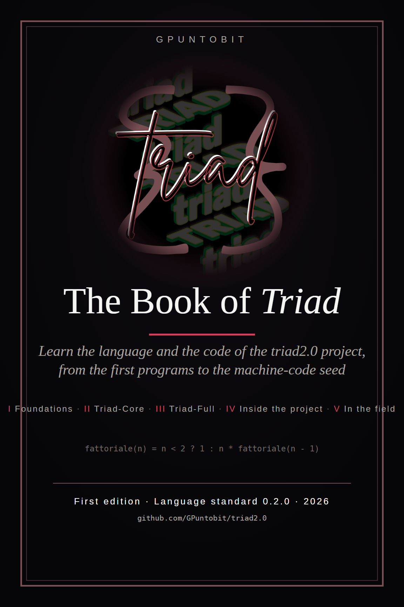

Triad is a standalone programming language: block syntax and declared types, multiple dispatch, integrated logic programming, code as data. Its definition is a normative specification independent of any implementation, accompanied by an executable specification and a conformance suite with verifiable golden outputs. This book is the study path.
The book arises from a simple need: learning Triad does not mean only reading the specification, but building a mental model of the language, its constructs, and its runtime. The specification is normative and precise, but it is written to be implemented, not to be read like a novel. This volume turns it into a path: explanations, examples, exercises, profile markers. The explanations, examples, and exercises build, step by step, the mental model of the language. The specification remains the normative reference source, not a reading prerequisite.
The ideal reader already knows how to program in another language: knows what a variable, a function, a loop, and recursion are. This book does not teach programming in general, it teaches Triad. The language's influences (Julia, Prolog, Lisp) are documented in Appendix A of the specification: they are informative notes, not definitions. Triad is not a dialect of any of the three.
The volume gathers two complementary and independent texts. The Triad 2.0 Manual explains the language, proposes exercises, and closes with grammar, quick reference cards, an error table, a glossary, and appendices. The Triad 2.0 Tutorial is divided into five parts: first steps, Triad-Core, Triad-Full, project code, and reference. You can read the Manual in full without the Tutorial, and the Tutorial in full without the Manual: each explains what it needs. The index that follows collects the chapters of both texts, so they can be found in a single place.
If you want to write executable programs today, start with the Tutorial, parts I and II; use the Manual to deepen the concepts and do the exercises. To study the complete standard, continue with part III of the Tutorial and the corresponding chapters of the Manual. Part IV is for those who want to explore or modify the repository.
The Manual's appendices guide you among the language's influences and the project's sources. The full normative texts are not reproduced in the volume: those who want the formal detail find them in the SPEC.md and SPEC-CORE.md files of the repository, which remain the definitive sources in case of divergence. The volume nonetheless contains the rules needed to understand and use the language: the reference to the specification is a deepening, not a dependency.
Two conformance profiles run through the whole book. Triad-Core is the bootstrap subset: values, functions, closures, control flow, lists, strings, I/O. Triad-Full is the complete standard. Every Core program is also a valid Full program and must behave the same way. The markers [Core] and [Full] indicate in which profile each construct exists; code blocks are marked triad for Core code and triad-full for code defined by the Full standard, not yet executable by the current runtime. Core examples can be tried with the reference JavaScript interpreter (node seed/dev/triad_core.cjs); fragments indicated as seed-specific are an exception.
The S0 seed is a Triad-Core interpreter written directly in x86-64 machine code, without a host language; today the executable seed is the one for Windows. It must not be confused with the JavaScript interpreter used to run Core examples and verify conformance. The bootstrap plan provides S1 (a Triad interpreter written in Triad-Core), S2 (native compiler), S3 (self-hosting), and S4 (cross-platform parity). Where the runtime does not cover a construct, the text says so explicitly.
Happy reading, and good code.
— GPuntobit